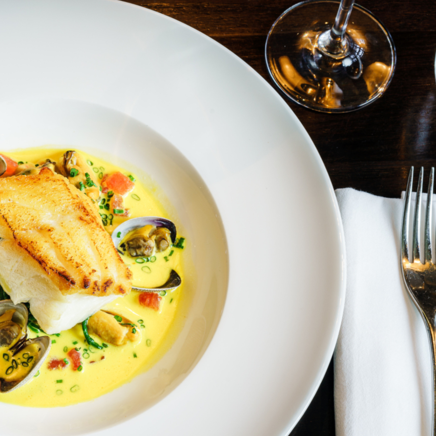
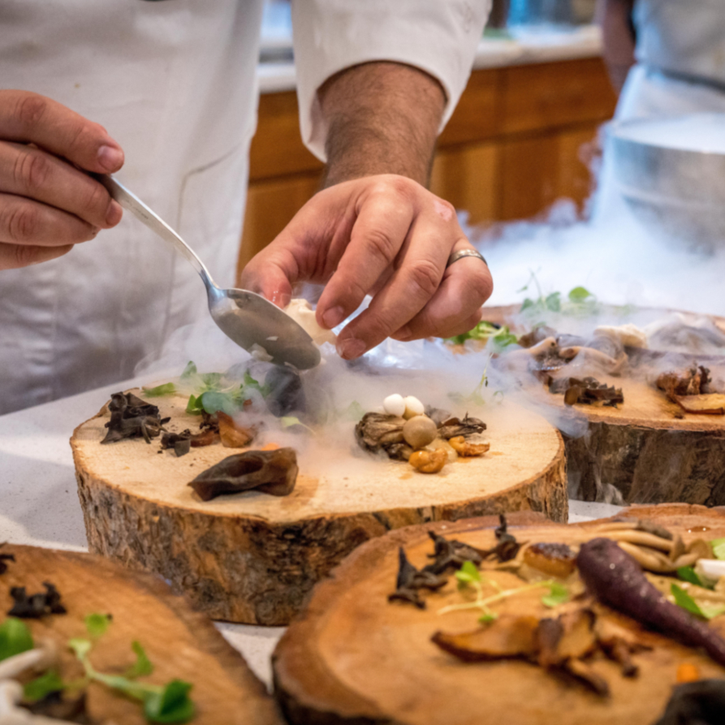

WELCOME
Welcome TO GALATA Established In 2016 Galata Restaurant serves a modern selection of most popular and most loved dishes of Turkish and Mediterranean cuisine as well as the mouth watering desserts. We serve not only healthy but also nutritious food for you and your family. All servings are prepared and cooked by our well-experienced and passionate chefs in our kitchen here at Galata.
 